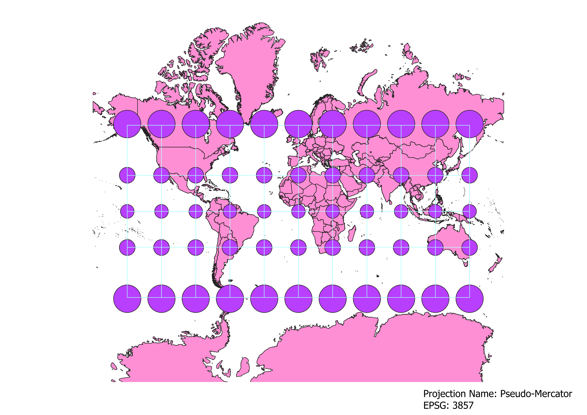

In this project I learned how to display images in different projections
How I displayed maps in different projections using QGIS
First, I downloaded a world map shape file that also depicts the world's country borders.
After importing this file into QGIS, I changed Coordinate Reference System to whichever projection
I wanted to use. The default projection was WGS84 (EPSG:4326). I also needed to install a plug-in
for my projections. Using the "Manage and Install Plug-ins" feature, I was able to install the Indicatrix
Mapper. This plug-in added a layer of circles and latitude/longitude lines over my shape file that
help visualize the distortion put on the map by different projections.
WGS84 Projection
This variant of the Mercator projection preserves the shape of countries and direction, but distorts their area. Notice how Greenland, a country 1/8the size of Africa, appears just as large as the African continent.
The closer a country is to the equator, the less distortion it suffers. This projection is commonly used in classrooms and is used by Google Maps.

Aitoff Projection
This modified azimuthal projection is similar to the Mercantor projection, but has some key differences. The first being its rounded
appearance. This shape helps to display the full shape of the continents (compare this full, round Antarctica to the Mercator's squarish, rolled out appearance),
but suffers more distortion around the edges of the map. It preserves country shape while distorting area; however, this projection sees far less area distortion
than the Mercator. Notice how small Greenland looks on this projection!

My Projections
Pseudo-Mercantor Projection
This cylindrical projection is also called the Web Mercator projection
because it is commonly used on computers to look at the Earth. It is useful because
although it distorts area and shape, it preserves direction.

Winkel Tripel Projection
This projection has a round shape resulting in less distortion of area and shape near
the poles. This map is a compromise between distortion of area, distance, and direction.

Cylindrical Equal Area Projection
This projection has a distinct horizontal stretch. This map preserves the area of countries
and direction, but it distorts their shapes. There is minimal distortion along the Equator. It looks like it could be created by wrapping a cylinder around a globe
horizontally, with the bases oriented facing east and west.

Equidistant Conic Projection
This projection preserves distances along meridians but distorts shape, area,
direction, and angles between latitude/longitude lines. On this projection, distortion is minimal
around the North Pole, but increases with distance from the North Pole. Interestingly, Antarctica appears bigger than all
other land masses combined.

North Pole Azimuthal Equidistant Projection
This projection is extremely similar to the Equidistant Conic projection,
but its cone shape seems to wrap completely around the globe. Compare this projection
Anarctica which meets end to end with the previous projection's Antarctica which has a
significant gap between the two edges. This projection also sees minimal distortion around
the North Pole and immense distortion with increasing distance from its center. This projection
is used by the United Nations. It stands out to me because it shows how closely connected
the continents are and how they are also quite concentrated in the northern hemisphere.

Polyconic Projection
Unlike the last two projections, this projection preserves area and shape
around both of the globe's poles. It preserves shape, area, distance, and direction
along the Prime Meridian. This projection curves the rest of the globe around
the poles giving us the most accurate depiction of Antarctica's shape and size
compared to any other projections I have included on this site.

Van der Grinten Projection
This projection preserves area and shape along the Equator, Tropic of Cancer, and Tropic
of Capricorn, but suffers extreme distortion along the Poles. It has a rounded shape with no
curvature along the Prime Meridian, but increasing curvature along longitude lines
moving away from the Prime Meridian.

Data used for this project
Download Natrual Earth 1:10m Cultural Vector